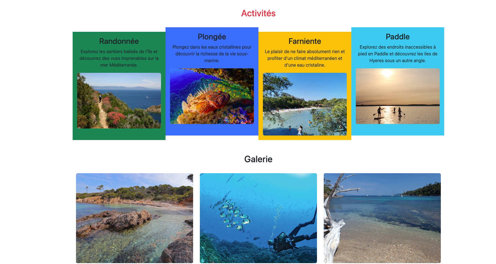
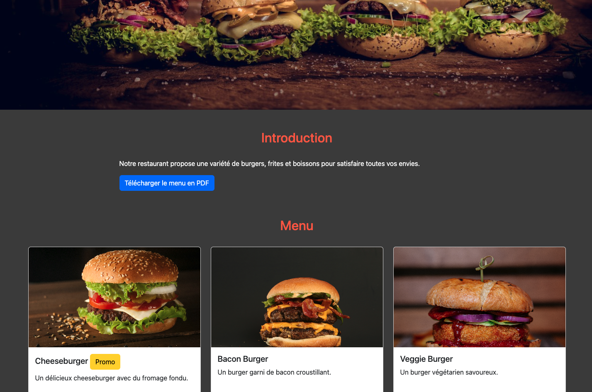
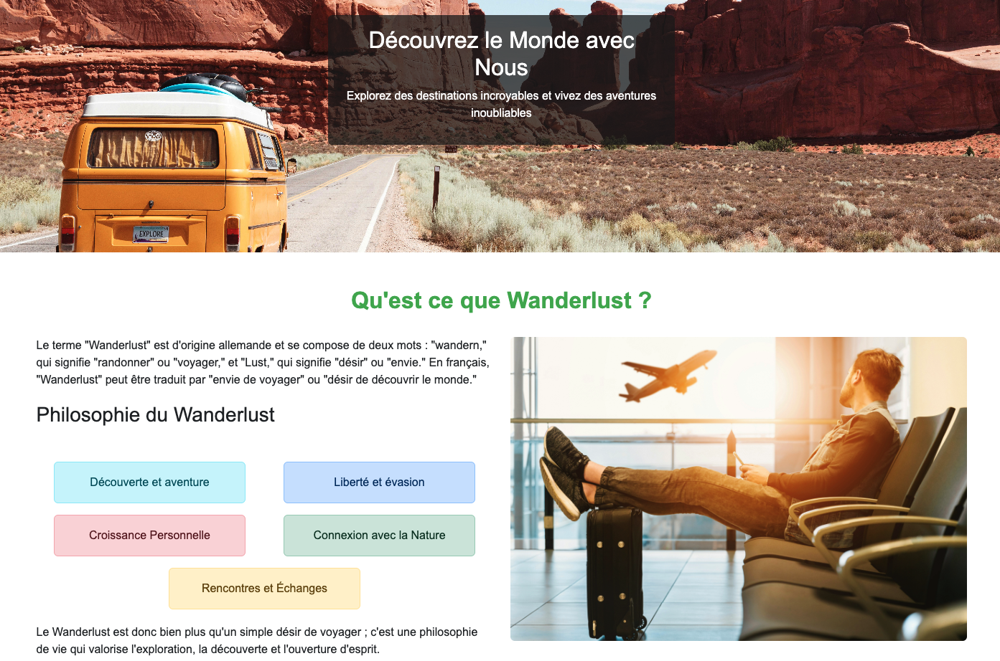
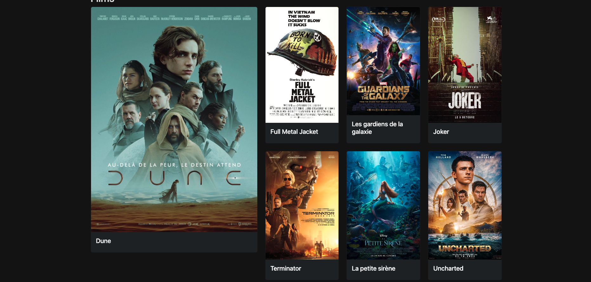
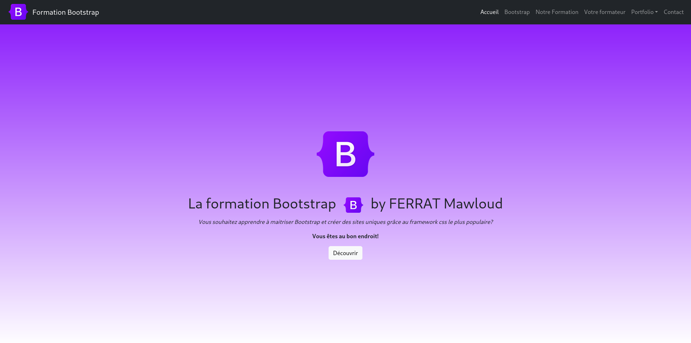

La formation Bootstrap by Codabee
Vous souhaitez apprendre à maitriser Bootstrap et créer des sites uniques grâce au framework css le plus populaire?
Vous êtes au bon endroit!
DécouvrirVous souhaitez apprendre à maitriser Bootstrap et créer des sites uniques grâce au framework css le plus populaire?
Vous êtes au bon endroit!
DécouvrirBootstrap est un framework front-end incontournable dans le développement web moderne, offrant une multitude d'avantages qui en font un choix privilégié pour de nombreux développeurs. Tout d'abord, il permet de créer des sites web réactifs, capables de s'adapter harmonieusement à diverses tailles d'écran, que ce soit sur un ordinateur, une tablette ou un smartphone. Cette flexibilité est essentielle dans un monde où l'accès à Internet se fait de plus en plus via des appareils mobiles.
L'un des principaux atouts de Bootstrap réside dans sa capacité à accélérer le processus de développement. Grâce à ses composants prêts à l'emploi, tels que les boutons, les formulaires, les modales et bien d'autres, les développeurs peuvent rapidement assembler des interfaces utilisateur sans avoir à coder chaque élément à partir de zéro. Cela permet non seulement de gagner du temps, mais aussi de réduire les risques d'erreurs et d'incohérences dans le code.
Bootstrap offre également une base de style uniforme, garantissant une apparence cohérente sur l'ensemble du site web. Cette standardisation est particulièrement précieuse dans les projets collaboratifs, où plusieurs développeurs travaillent ensemble. Elle assure que chaque partie du site respecte les mêmes normes de design, facilitant ainsi la maintenance et les mises à jour futures.
Malgré ses styles par défaut, Bootstrap est entièrement personnalisable. Les développeurs peuvent modifier les variables CSS pour adapter le design à leurs besoins spécifiques, ce qui permet de créer des sites uniques tout en bénéficiant des avantages du framework.
La compatibilité avec les navigateurs est un autre point fort de Bootstrap. Conçu pour fonctionner avec la plupart des navigateurs modernes, il minimise les problèmes d'affichage et de fonctionnalité, offrant ainsi une expérience utilisateur fluide et cohérente.
En outre, Bootstrap est soutenu par une documentation complète et une communauté active. Les développeurs, qu'ils soient débutants ou expérimentés, peuvent facilement trouver des ressources, des tutoriels et des forums pour obtenir de l'aide et des conseils. Cette richesse de support facilite l'apprentissage et l'utilisation du framework.
Enfin, Bootstrap intègre des fonctionnalités qui favorisent l'accessibilité, un aspect crucial pour garantir que le contenu soit utilisable par tous, y compris les personnes ayant des handicaps. En résumé, Bootstrap est bien plus qu'un simple outil de développement ; c'est une solution complète qui combine rapidité, cohérence, flexibilité et accessibilité pour créer des sites web modernes et performants.
Dans ce projet, nous allons ensemble créer un site web qui reprendra les principaux concepts appris durant la première partie du cours.
Nous pourrons ainsi commencer à prendre en main:

Faim d'apprendre?
Voici le projet parfait pour digérer la théorie de:

Evasion quand tu nous tiens
Depuis notre clavier nous allons voyager avec :

Ce projet commence à intégrer beaucoup d'éléments Bootstrap.
Nous pourrons ainsi ajouter:

Il sera temps d'assembler toutes les connaissances acquises pour créer ce site.
Etes-vous prêts?

Bonjour à tous, je suis Matthieu Passerel, formateur passionné et développeur d'applications mobiles. Mon parcours m'a conduit à explorer à la fois le développement personnel et le développement d'applications, deux domaines qui me tiennent particulièrement à cœur.
Je suis le fondateur de Codabee, une plateforme dédiée à l'apprentissage du développement mobile de manière simple et accessible. Mon objectif est de rendre la programmation accessible à tous, en proposant des cours clairs et structurés qui permettent à chacun de progresser à son rythme.
Sur des plateformes comme Udemy et tuto.com, je partage mes connaissances à travers des formations en ligne sur le développement iOS, Android, ainsi que sur des technologies comme Flutter et Dart. J'aime enseigner et voir mes élèves progresser, qu'ils soient débutants ou déjà expérimentés.
Je suis également actif sur les réseaux professionnels comme LinkedIn, où j'échange avec la communauté des développeurs et partage mes expériences et conseils.
Si vous êtes intéressé par le développement mobile ou si vous avez des questions, n'hésitez pas à me contacter. Je serais ravi de pouvoir vous aider dans votre parcours d'apprentissage !
Pour toute question, remplissez le formulaire :